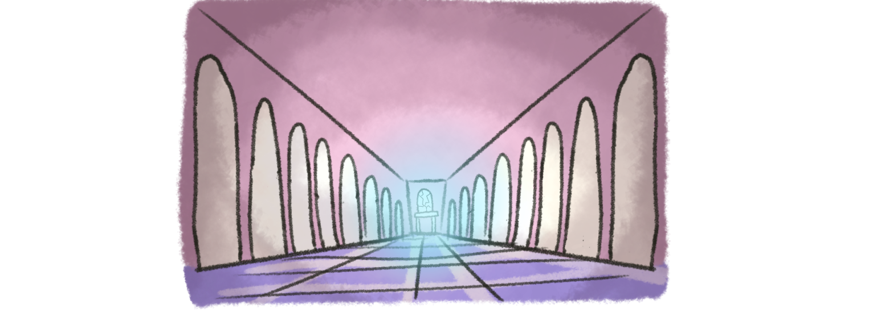

Now, let’s immerse you deeper into this experience.
You will enter the Cracked Mirror World, where you’ll confront the fragmented ways you see yourself.
Each step will bring you closer to understanding and, perhaps, acceptance.
You stand in a large hall, surrounded by mirrors that reflect you in different ways.

The air feels mysterious, and your attention is drawn to a cracked mirror.
Its broken surface glows softly, as if it holds secrets just waiting to be discovered.